hi! i'm @amyleew
designer and navigator @mapbox
mapbox is: platform to design & build maps
 design
design build
buildmapping your neighborhood
baltimore natives?
i'm from small village called sardinia, ohio
let's talk about mapping.
internship
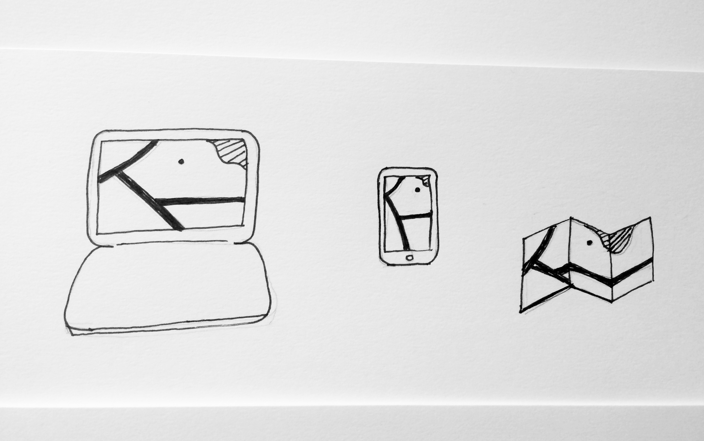make it all the things
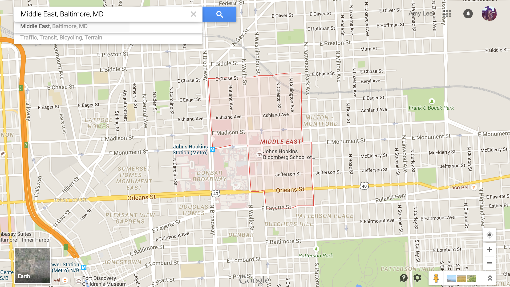
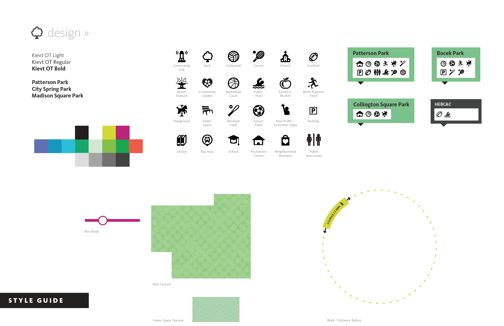
lots of research and custom data
clueless
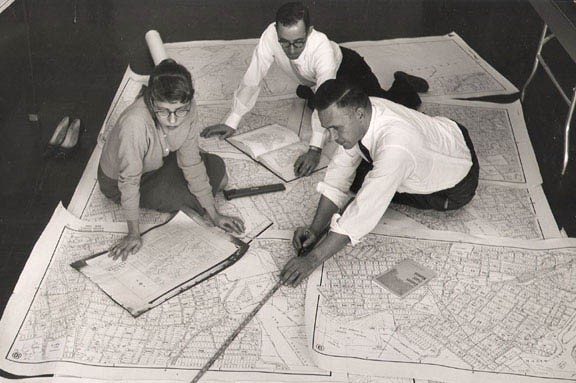maps are hard
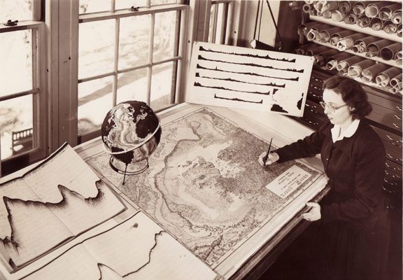map is science
maps are everything
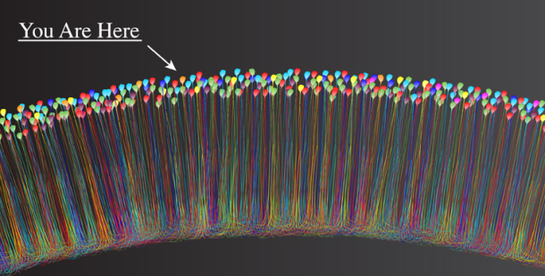we are always mapping
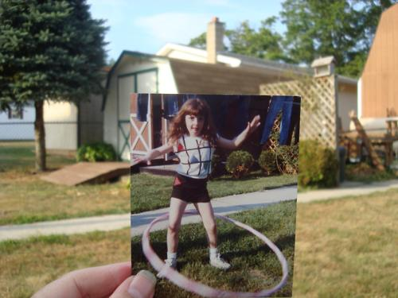maps are about place
if i could turn back time... what would i teach
keys to any map project:
- place
- data
- tools
- narrative
place:
- center
- coordinates (lat / long)
- bounds
center
 lat / long
lat / long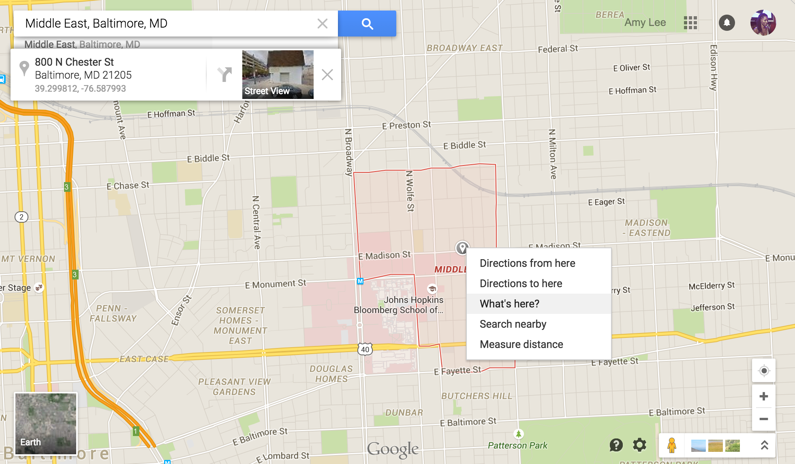
39.299812, -76.587993
bounds
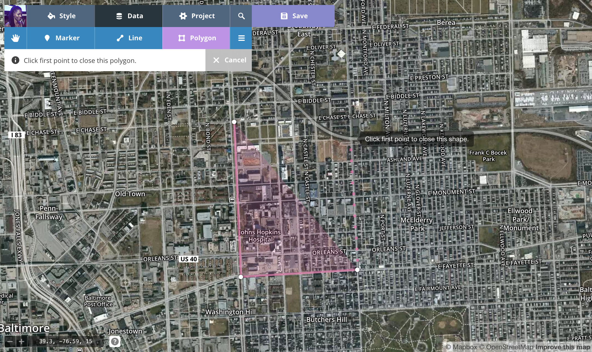
N Broadway => E Chase St => N Patterson Park Ave => E Fayette St
data:
- .geojson
- geometry types (point, line, polygon)
- format(s)
- sources
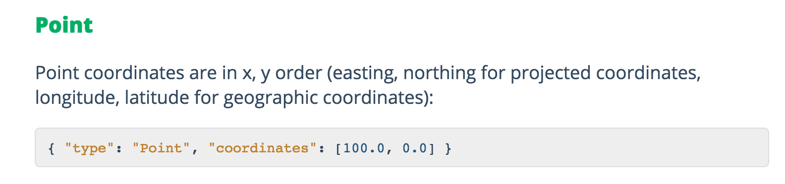point
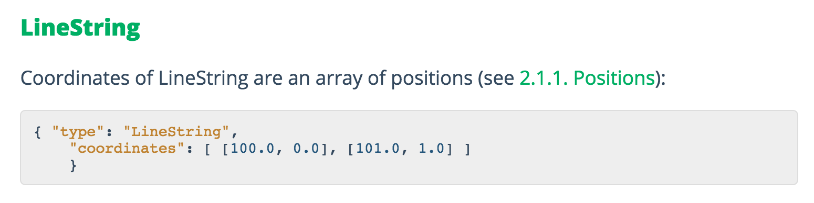linestring
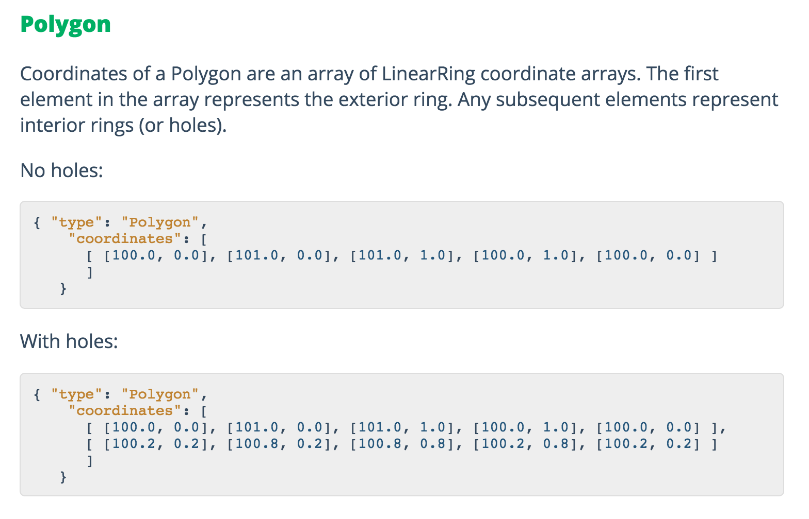polygon
supported formats: .csv, .kml, and .gpx files
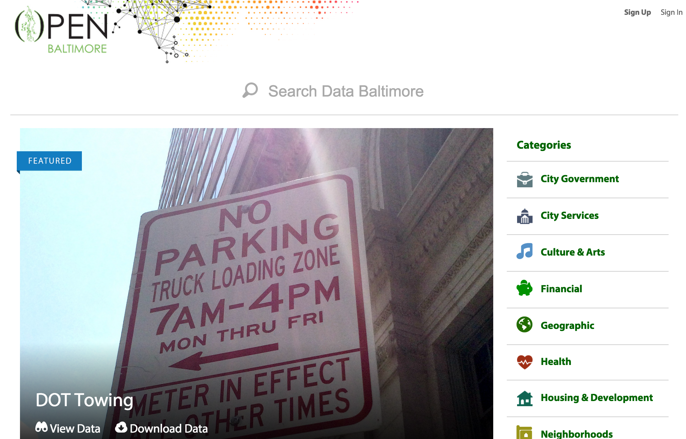
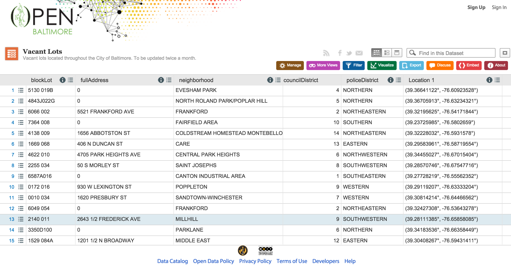
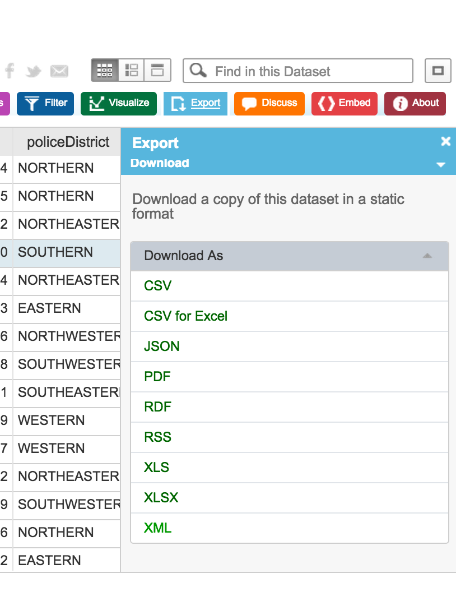
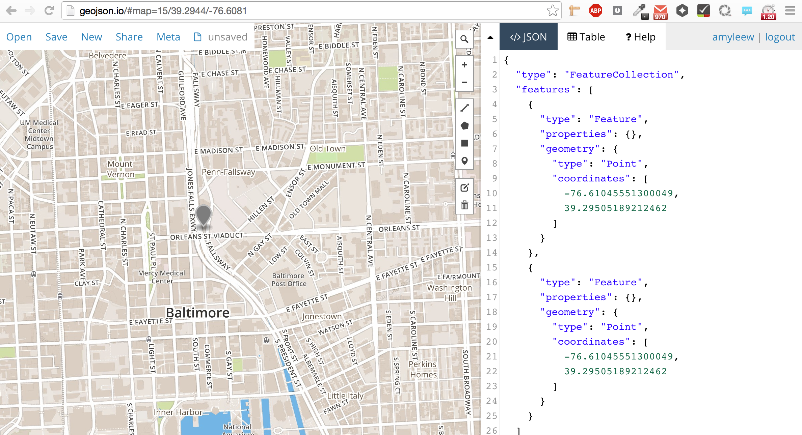http://geojson.io
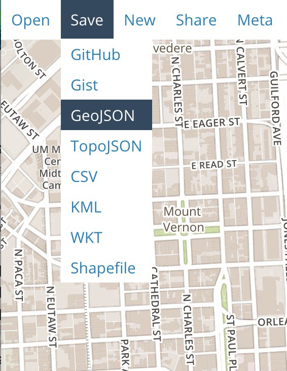
tools
- mapbox editor http://mapbox.com/editor
- mapbox studio http://mapbox.com/mapbox-studio
- geojson.io http://geojson.io
starter styles in Editor
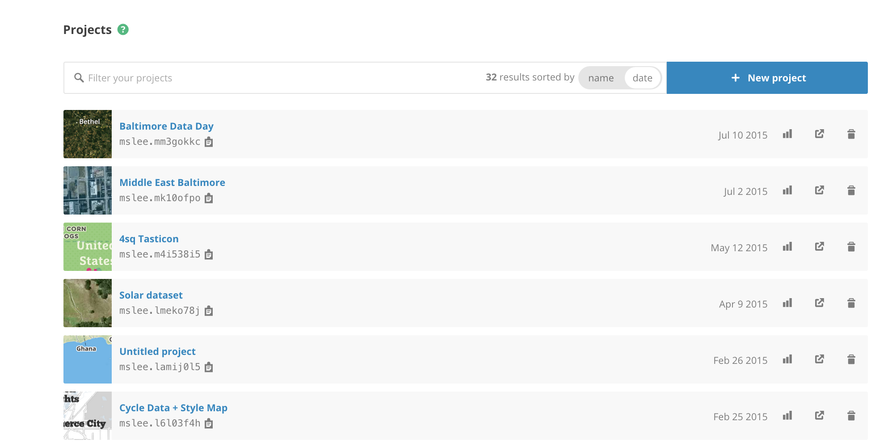host MAP on Mapbox.com
narrative
 mobile
mobile Mapbox.js
Mapbox.js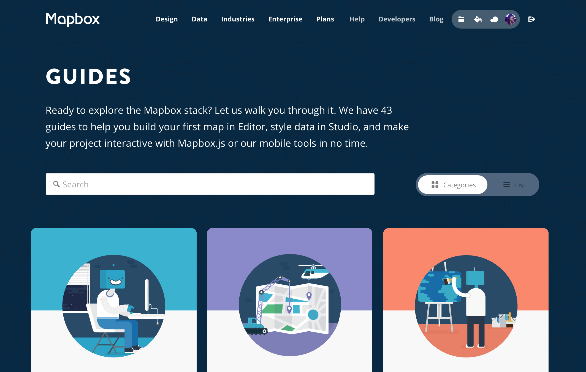guides for everything
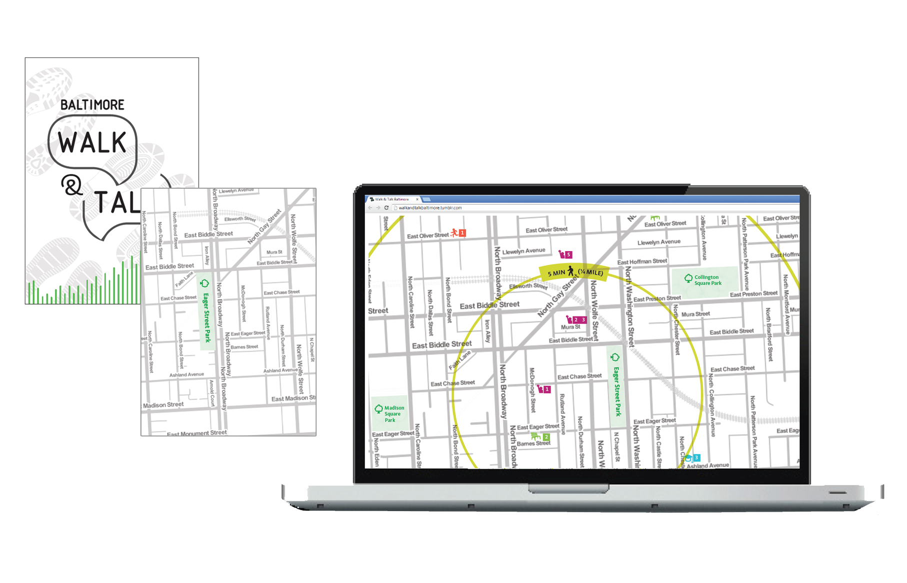final project
you now know more than i did.
make me proud!
thanks. questions?
@amyleew designer @mapbox